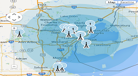
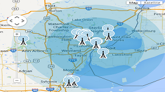

The signs illustrated in The Highway Code are not all drawn to the same scale. In Wales, bilingual versions of some signs are used including Welsh and English versions of place names. Some older designs of signs may still be seen on the roads. We identifies the sign to refer us.

Many countries have adopted pictorial signs or otherwise simplified and standardized their signs to overcome language barriers, and enhance traffic safety. We made one of the process to find what you need at that time.

Road sign problems are monitoring second by second that process which make the way effective fo all ,because of road maintenance and traffic safety issues in unincorporated Country, such as downed stop signs, signals that are out, or trees over the roadway — 24 hours a day.
 

The Road To Success
is always under construction..
When a group of ambitious designers meet, you know something hot is brewing. Take a closer look and you’ll find them murmuring away..
Being aware of the road signs will help you to recognize the meaning and importance of each and every sign such as the road conditions ahead..
At some time, we combine creative thinking and best practices to develop engaging and effective assets to enhance your websites..


© Copyrights Reserved 2020.
Feedback